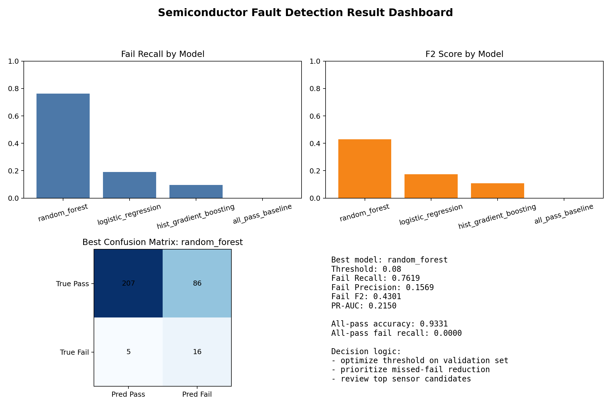
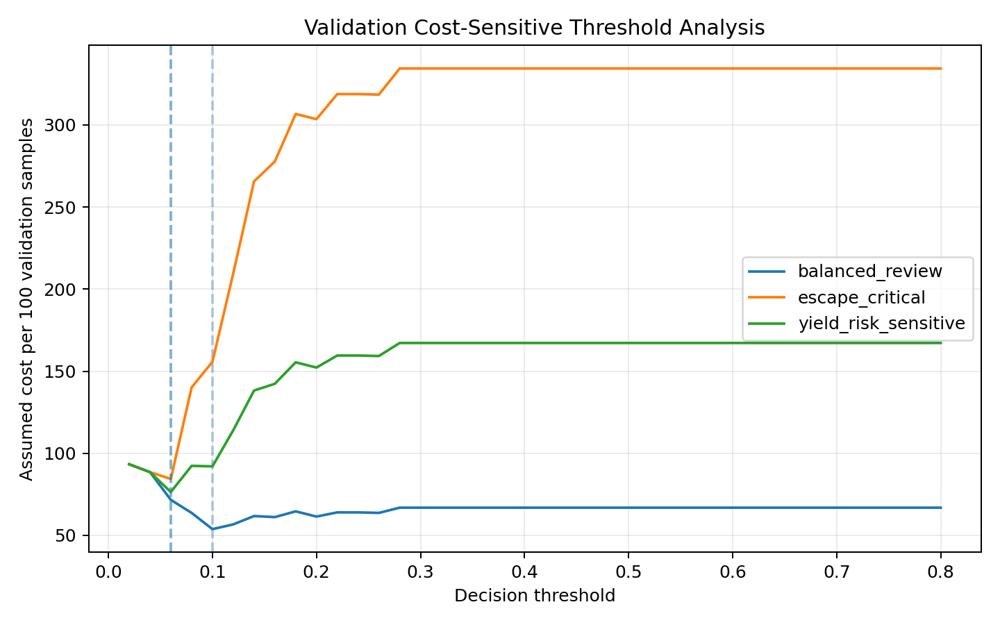
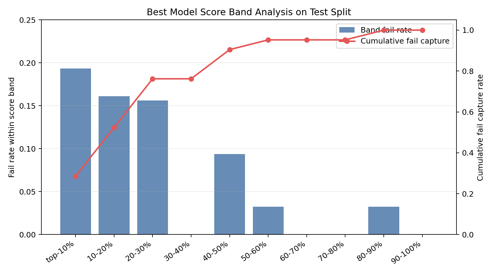
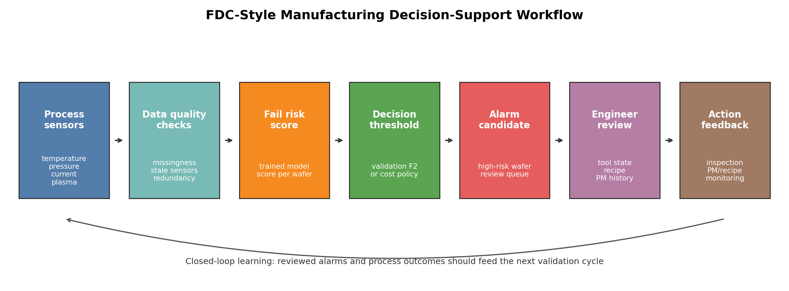
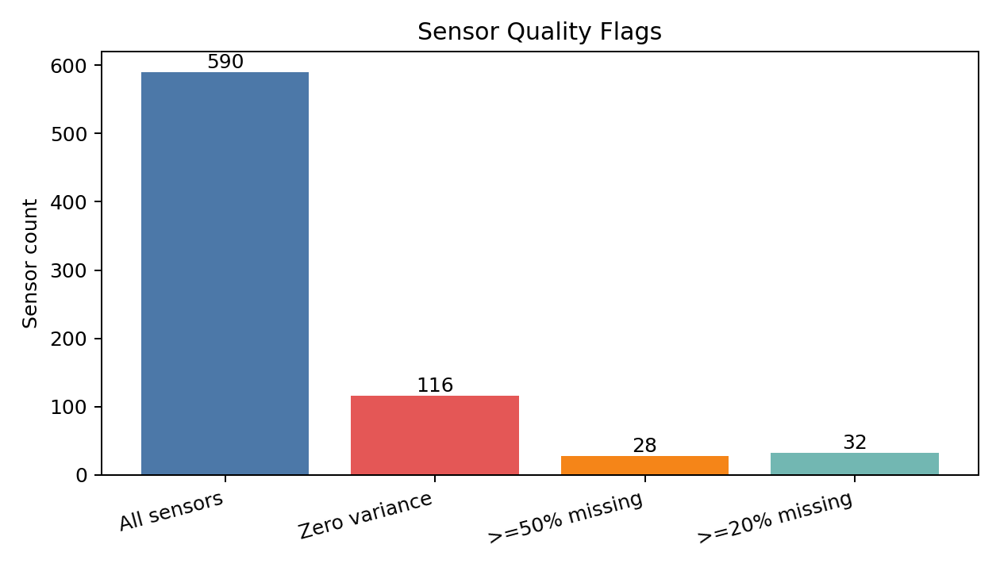
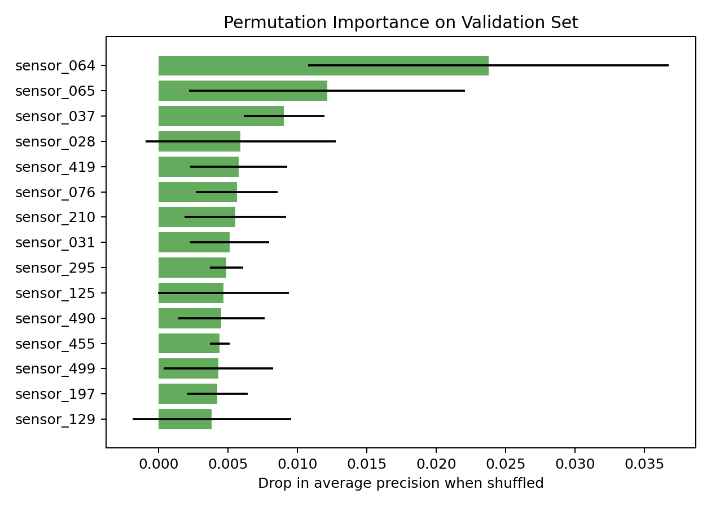

Executive Snapshot
Best Model
extra_trees_balanced
threshold 0.10
Fail Recall
0.7619
held-out test
Fail F2
0.4819
validation threshold
PR-AUC
0.2174
fail ranking quality
Missed Fail
5
out of 21 test fail cases
False Alarm
66
engineering review candidates
All-Pass Accuracy
0.9331
but zero fail recall
Fail Ratio
0.0664
full SECOM dataset
The all-pass baseline looks strong by accuracy, but catches no fail samples. This dashboard therefore focuses on fail recall, F2, PR-AUC, missed fail, and false alarm counts.
Result Overview

Model Comparison
| name | threshold | accuracy | recall_fail | precision_fail | f2_fail | pr_auc | missed_fail_count | false_alarm_count |
|---|---|---|---|---|---|---|---|---|
| extra_trees_balanced | 0.1000 | 0.7739 | 0.7619 | 0.1951 | 0.4819 | 0.2174 | 5 | 66 |
| random_forest_unweighted | 0.1000 | 0.8025 | 0.6667 | 0.2029 | 0.4575 | 0.1701 | 7 | 55 |
| random_forest_balanced | 0.0800 | 0.7102 | 0.7619 | 0.1569 | 0.4301 | 0.2150 | 5 | 86 |
| isolation_forest_pass_only | 0.0600 | 0.0955 | 0.9524 | 0.0660 | 0.2584 | 0.1606 | 1 | 283 |
| logistic_regression_unweighted | 0.0600 | 0.8089 | 0.2381 | 0.1020 | 0.1880 | 0.1220 | 16 | 44 |
| logistic_regression_balanced | 0.6200 | 0.8599 | 0.1905 | 0.1290 | 0.1739 | 0.1219 | 17 | 27 |
| hist_gradient_boosting | 0.0200 | 0.9172 | 0.0952 | 0.2222 | 0.1075 | 0.2137 | 19 | 7 |
| all_pass_baseline | 1.0000 | 0.9331 | 0.0000 | 0.0000 | 0.0000 | 0.0669 | 21 | 0 |
Cost-Sensitive Thresholding
Thresholds are selected on validation data. The held-out test split is used only for final evaluation.
| scenario | false_alarm_cost | missed_fail_cost | selected_threshold_from_validation | test_missed_fail_count | test_false_alarm_count | test_fail_recall |
|---|---|---|---|---|---|---|
| balanced_review | 1.0000 | 10.0000 | 0.1000 | 5 | 66 | 0.7619 |
| yield_risk_sensitive | 1.0000 | 25.0000 | 0.0600 | 1 | 207 | 0.9524 |
| escape_critical | 1.0000 | 50.0000 | 0.0600 | 1 | 207 | 0.9524 |

Score Band Review
Held-out test samples are sorted by fail-risk score and grouped into equal-sized bands. This is a ranking-quality view, not a calibrated probability claim.

| band | sample_count | fail_count | fail_rate | cumulative_review_rate | cumulative_fail_capture_rate |
|---|---|---|---|---|---|
| top_10_percent | 31 | 6 | 0.1935 | 0.0987 | 0.2857 |
| 10_20_percent | 31 | 5 | 0.1613 | 0.1975 | 0.5238 |
| 20_30_percent | 32 | 5 | 0.1562 | 0.2994 | 0.7619 |
| 30_40_percent | 31 | 0 | 0.0000 | 0.3981 | 0.7619 |
| 40_50_percent | 32 | 3 | 0.0938 | 0.5000 | 0.9048 |
Manufacturing Workflow

Data Quality
Zero-variance sensors: 116. Sensors with at least 50% missing values: 28.

| sensor | missing_count | missing_ratio | non_missing_count |
|---|---|---|---|
| sensor_157 | 1429 | 0.9119 | 138 |
| sensor_292 | 1429 | 0.9119 | 138 |
| sensor_293 | 1429 | 0.9119 | 138 |
| sensor_158 | 1429 | 0.9119 | 138 |
| sensor_492 | 1341 | 0.8558 | 226 |
| sensor_358 | 1341 | 0.8558 | 226 |
| sensor_085 | 1341 | 0.8558 | 226 |
| sensor_220 | 1341 | 0.8558 | 226 |
| sensor_246 | 1018 | 0.6496 | 549 |
| sensor_109 | 1018 | 0.6496 | 549 |
Sensor Candidate Prioritization
SECOM sensors are anonymized, so these are engineering review candidates rather than confirmed physical root causes.

| feature | permutation_importance_mean | permutation_importance_std |
|---|---|---|
| sensor_064 | 0.0238 | 0.0130 |
| sensor_065 | 0.0121 | 0.0099 |
| sensor_037 | 0.0090 | 0.0029 |
| sensor_028 | 0.0059 | 0.0068 |
| sensor_419 | 0.0058 | 0.0035 |
| sensor_076 | 0.0057 | 0.0029 |
| sensor_210 | 0.0055 | 0.0037 |
| sensor_031 | 0.0051 | 0.0028 |
| sensor_295 | 0.0049 | 0.0012 |
| sensor_125 | 0.0047 | 0.0047 |